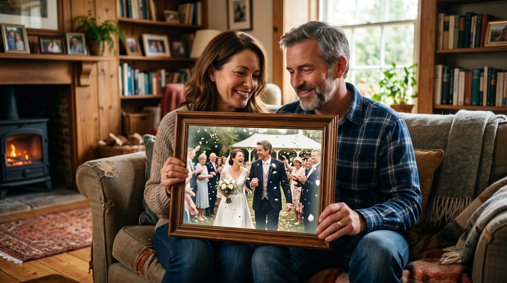

Свадебные фотографии родителей — это не просто снимки, а настоящие хранители семейной истории. Подарите им новую жизнь, оживив их при помощи VideoAI. Это просто, доступно и не требует подписки.
Оживление фотографий, особенно таких значимых, как свадебные снимки родителей, несёт в себе глубокий смысл. Это не просто способ перенести воспоминания в цифровой формат, но и возможность подарить своим близким настоящую эмоциональную ценность. Представьте, как ваши родители увидят себя в движении на своей свадьбе — это может стать трогательным подарком на годовщину или юбилей.
С помощью оживления старых фотографий можно создать уникальный семейный архив. Такой архив будет не только хранителем истории, но и вдохновляющим материалом для будущих поколений. Вспомните, как приятно бывает рассматривать старые альбомы — теперь у вас есть возможность добавить к этому движущиеся изображения, которые оживят семейные воспоминания.
Чтобы получить лучший результат, важно правильно выбрать фотографию для оживления. Рекомендуется выбирать снимки, где лица сняты в анфас и хорошо видны. Это поможет нейросети максимально точно интерпретировать изображение и создать реалистичное видео. Если фото размыто или повреждено, попробуйте отреставрировать его с помощью простых программ для обработки изображений.
Желательно, чтобы на фото было одно лицо. Это упростит работу нейросети и улучшит качество конечного видео. Если у вас есть только старые или повреждённые фотографии, не спешите отказываться от идеи — современные технологии могут помочь восстановить и их. Оживление свадебных снимков — это способ сделать из старой фотографии настоящий шедевр.
Начните с загрузки фотографии на сайт botisk.ru. Процесс не требует регистрации, что делает его быстрым и удобным. Просто выберите нужное вам фото и загрузите его на платформу. Сервис предложит вам несколько вариантов движения, которые вы можете использовать для оживления изображения.
Через 60 секунд вы получите готовое видео, полностью оживившее вашу фотографию. Первое видео предоставляется бесплатно, что позволяет вам попробовать сервис без каких-либо обязательств. Это делает VideoAI идеальным выбором для тех, кто хочет оживить фото быстро и без лишних затрат. Узнайте больше о том, как оживить старое фото.
| Способ | Время | Цена | Результат |
|---|---|---|---|
| VideoAI | ~60 сек | От 0 руб. за первое видео | Высокое качество, быстрое исполнение |
| Фрилансер | 2-3 дня | От 1000 руб. | Зависит от навыков исполнителя |
| Студия | 1-2 недели | От 5000 руб. | Профессиональное качество, но долго |
| Зарубежные сервисы | ~5 мин | От 5 долл. за видео | Часто требуется подписка |
Оживление фотографий — это не только способ сохранить воспоминания, но и возможность подарить новую жизнь важным моментам. Попробуйте оживить фотографии не только родителей, но и других близких: оживить фото дедушки или фото бабушки. Начните свой путь с VideoAI и создайте видео прямо сейчас: создать видео.
Без регистрации. Первое видео — бесплатно. Загрузите снимок — получите живое видео за 60 секунд.
Создать видео из фото →Выбирайте фото с чёткими деталями и анфас. Это поможет нейросети лучше проработать изображение и создать реалистичное видео.
Оживление фото через VideoAI занимает около 60 секунд. Это быстро и удобно, особенно если нужно сделать видео к определённой дате.
Первое видео бесплатно. Далее стоимость начинается от 290 рублей за 10 видео, что делает сервис доступным для всех.